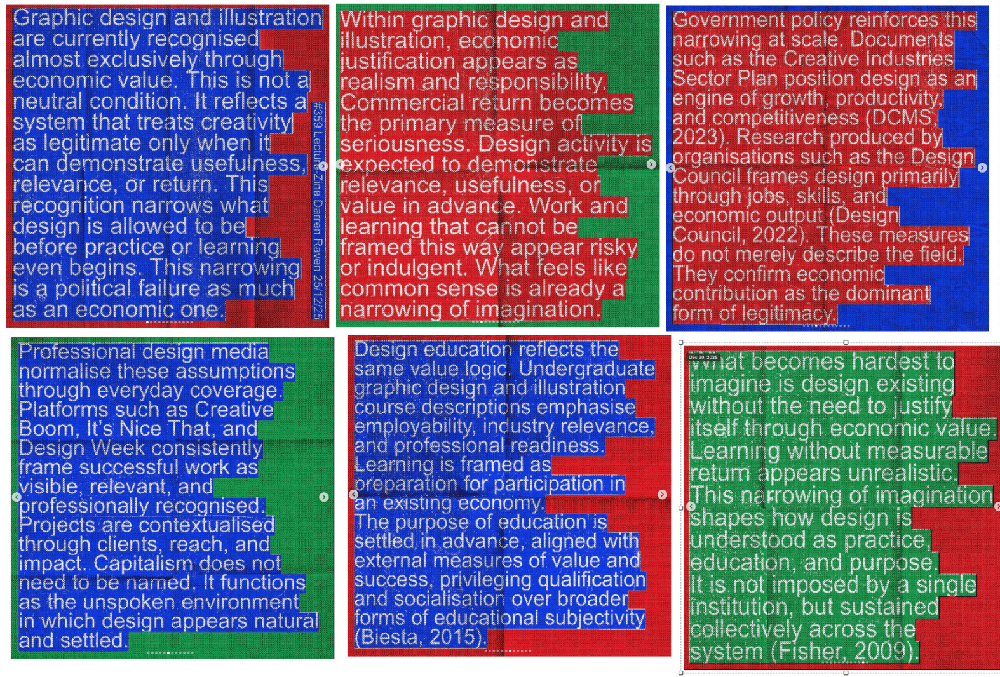

EVALUATION OF SOURCE
Darren Raven is a Manchester-based design educator using Instagram 'lecture-zines' to explore "dry and elitist" ideas that he wants design students to engage with. He publishes these lecture-zines everyday on Instagram and LinkedIn, with some taking the form of manifestos, others a collection of notes and thinkpieces. The platform is wickedly cool and accessible, promoting "digitally-enhanced education, academic development and education innovation". Can Instagram be used as a means of academic publishing, rather than traditional dry long formal journals?

SUMMARY
This lecture-zine expounds and challenges how the only value of design and illustration industry lies in economic value or profit, condemning the narrowness and limitations of such a capitalist valorisation in today's society. When commercial return is the only measure of 'good' 'serious' design, what does that say about creativity, imagination and risk-taking for designers? Who says economic contribution is the dominant, or only, form of legitimacy?
"Graphic design and illustration are currently recognised almost exclusively through economic value. This is not a neutral condition."
"It took me years to figure out why I dislike certain things. I dislike virtuosity. I prefer rough, raw, unpolished, 'bad', quirky, weird. Some guy playing a perfect guitar solo or some super polished drawing just seem dead to me. This is growing as I age. The music I imagine to be listening to on my deathbed will just be some guy screaming into a bucket perhaps? The main thing I've realised with teaching over the years is how many people, when faced with an impasse, choice, some slight confusion etc is that they stop. Fuck that. If you don't know what to do do more of anything. Something will come from that. There is no 'right track'. Your anxieties about getting it right or you're not good enough are the whispering voices of the tyrannical capitalist overlords of the patriarchy trying to keep you in your place. Throw away the instruction manuals. Punch that 'well actually you need to do it like this' Nazi in the face. If no one knows what you're doing how can they tell you you're doing it wrong. The references might be hard to read but if you pinch into the you can see them clearly. Check them out. Do some reading or just put their names into an AI or something. Glean."
INTERPRETATION
Found this little thing buried in my Instagram saves. Fascinating & thought-provoking. Insane read and I can't believe I didn't know about Darren Raven before. Even his way of weaponising social media & the online platform as a tool for making information and education accessible is insane. I love it because I'm not anti-social media but wished it was used for good, to make info more accessible & widespread (the early promises of the dotcom) rather than contribute to capitalism and the attention economy.
Will read Capitalism Realism by Mark Fisher (what inspired this lecture zine) next!